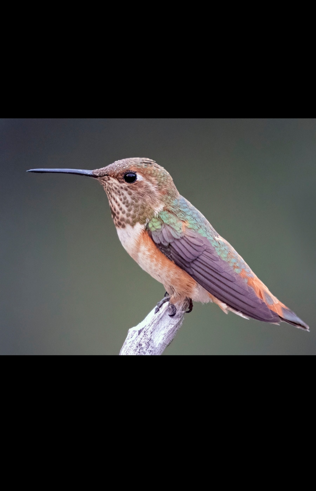
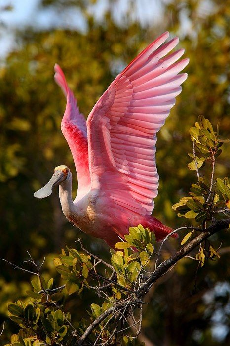
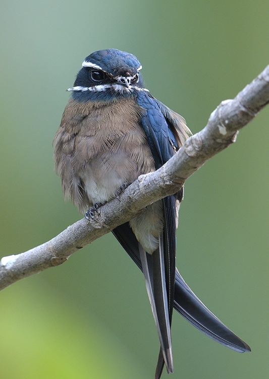
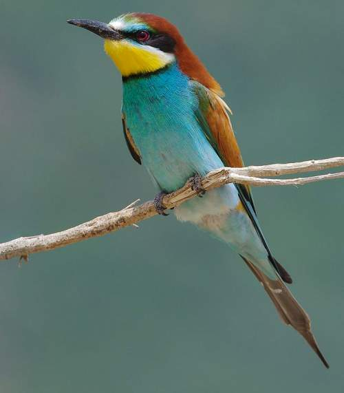
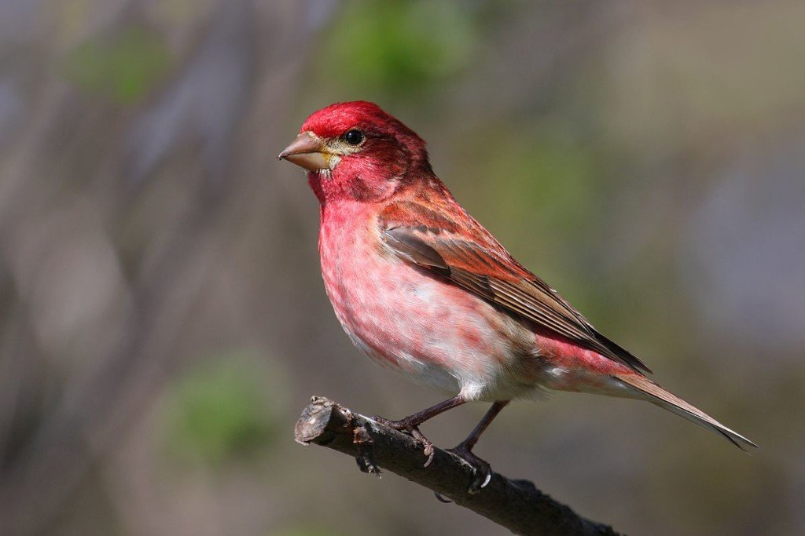

| Sl.No. | Bird's Name | Details | Image |
|---|---|---|---|
| 1 | Humming Bird | Humming Bird is a small bird and a familly member of Trochilidae.When their wings flap ,a humming sound is created.They can fly in all directions. |  |
| 2 | Spoonbill | spoonbill is a white bird and a family member of Thresiornithidae.It is a long-legged wading bird. |  |
| 3 | Swift | Swift belongs to a family of Apodidae of highly aerial birds. Treeswifts are closely related to true swifts. These are flying birds and are the fastest fliers.Common swift can cover at least 200,000 km in a single year. Swift has large wingtip bones. |  |
| 4 | Bee-Eater | The scientific name of the bee-eater is Meropidae, and it is a family member of Meropidae. Twenty-Six different species of bee-eater are at present.One unique character of bee-eater is that before consuming its prey, it removes the stinger of the insect. |  |
| 5 | Passerine | The scientific name is Passeriformes. A distinctive feature of this bird is an arrangement of toes three pointing forward and another one back. It has more than 110 families. Chicks of passerines are blind, helpless, and featherless. |  |